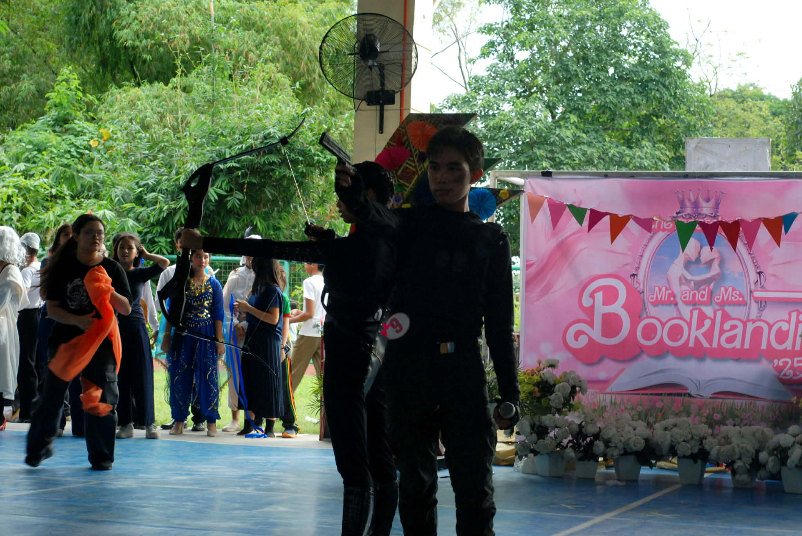

Reflection on Booklandia!
What is the most important thing I learned from the event?
The most important thing I learned from participating in Booklandia was the importance of confidence and creativity when expressing ideas from literature. Representing my section as Miss Booklandia together with my partner, Emmanuel Subaria, allowed me to step outside of my comfort zone and perform in front of many people. By portraying Katniss Everdeen and Peeta Mellark from The Hunger Games, I learned how stories and characters from books can be brought to life through creativity and performance.
How can I apply what I learned in real-life situations?
I can apply what I learned from this experience by becoming more confident in presenting myself and expressing my ideas. Confidence is an important skill not only in school but also in real-life situations such as public speaking, interviews, and leadership roles. I also learned that creativity can help make ideas more engaging and interesting, which can be useful when presenting projects or sharing ideas with others.
Did I actively participate in the event? How?
Yes, I actively participated by representing my section as Miss Booklandia and working together with my partner to portray our chosen characters. We prepared our costumes, practiced how we would present ourselves on stage, and made sure that our performance represented the characters well. Although we did not place in the competition, I still considered it a valuable and enjoyable experience because I was able to participate actively and meet many new people.
If I were to teach this topic or subject to a classmate, how would I explain it?
If I were to explain this to a classmate, I would say that Booklandia is an activity that encourages students to appreciate literature by bringing book characters to life. Students choose characters from stories and present them through costumes and performances. This helps students develop creativity and a deeper appreciation for reading and storytelling.
Why is it important to have events like this?
Events like Booklandia are important because they encourage students to read more and appreciate literature. They also help students develop confidence and creativity when presenting themselves in front of others. These kinds of activities make learning more interactive and enjoyable because students are able to connect what they read with creative expression.
credits to Jade Imperial for the photos!:
